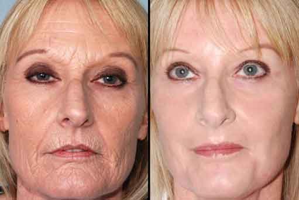

ВАЖНО Революционният изобретател на крем против бръчки номиниран за три категории на Нобелова награда
Клиничните изследвания на професор Тибор Немет доказват, че помага за премахване на бръчките и сухата, увиснала кожа, като елиминира ефективно 15 години от нашата възраст.
Преди да се задълбочим в подробностите, нека разгледаме по-подробно резултатите от това невъобразимо откритие. Кожата на 54-годишна жена беше подмладена биохимично в продължение на три десетилетия по време на серия от експерименти. Да повторя, кожата на 54-годишна жена в момента е същата като на 24-годишна жена. Друга жена с биологична възраст 34 години е станала идентична с тази на 22-23-годишна жена.
На пръв поглед тези резултати могат да изглеждат прибързани, може би твърде оптимистични, ако мислим в сегашните възможности на науката. Тук идва картината, обаче, ефектът на колагена , върху ДНК-то на кожните клетки, особено в епидермиса и кожата (двата горни слоя на кожата). Изглежда науката най-накрая е намерила начин да преодолее бръчките, които дори могат да обърнат процеса на стареене.
(Паула, Будапеща) На историческа пресконференция бе обявено, че американският професор е роден в Унгария. Новият метод за грижа за кожата се основава на откритието на професор Немет, който използва трима други носители на Нобелова награда по биология и химия: Ейрик Албертсон, Надан Петерсон и Юка Фиберг.
е тестван при над 800 пациенти при лабораторни условия. Резултатите бяха невероятно впечатляващи: кожата на всяка участваща жена беше значително подмладена (във възрастовата категория 25-72 години). Средно кожата им се подмладява между 5-25 години само за 4-6 седмици. ДА, ТЕЗИ РЕЗУЛТАТИ СА ИСТИНСКИ! Но да се върнем на пресконференцията. Професор Немет извика на сцената жена на 30 годишна възраст, която доказа годината на рождането си с личната карта. Журналистите са шокирани! Тя е родена през 1967 г. и е всъщност на 54 години.
Изглеждаше така, сякаш кожата й се е променила напълно.
След поздравите, професор Немет говори за типичните признаци на стареене, които изпитват всички жени до 25-годишна възраст. Това включва посиняване, особено между очите и веждите, появата на линии около устата и носа, релаксация и изсушаване на шията и лицето. Тогава с различни документални доказателства професорът представи необичайното подмладяване на кожата на Стефания.
След като представи иновативния продукт - бял крем в стилна бутилка, професор Жулиета внимателно нанесе продукта върху лицето, без излишни движения или масажиране. Белият крем веднага се абсорбира в кожата. Лицето на Стефания изглеждаше свежо за секунди. Челото на 54-годишната жена беше гладко като на новороденото. Ефектът на крема върху цялото лице беше така, сякаш гледаме на ефекта от инжекция с Botox, но този продукт е напълно здравословен и естествен, за разлика от състава за инжектиране.
В края на демонстрацията кожата на Стефания почти излъчваше младост. Ако не бях виждала на колко
години е, нямаше да повярвам, че наистина е на 54. И без фотографските доказателства никога не бих
си помислила, че някога съм имала суха или повредена кожа. Тя изглеждаше поне едно поколение
по-млада.
Можете да си представите нашата изненада, бяхме свидетели на истинско чудо, но това беше чудо
на науката, а не на научнофантастична спекулативна фантастика.
Научното обяснение
„Промяната, която видяхте, може да е чудо за някои, но за нас учените е просто напълно разбираема реакция“. - каза професор Немет. "Целият феномен се основава на единно по рода си историческо откритие, което е изградено от десетилетия на лабораторни експерименти и стотици тестове и тестове." - добави професорът. "Световноизвестните учени, носители на Нобелова награда, са намерили начин да модифицират клетъчнота ДНК на кожата, нейна заслуга, а не моя. Именно чрез техните усилия и любовта им към науката е направено това откритие." - посочи професорът. С възрастта жлезите и мускулите на кожата започват да изсъхват, губят стегнатостта и еластичността си и те развиват линии на бръчки особено когато се усмихваме. По този начин кожата губи своя блясък и жизненост.
Какво причинява стареенето на кожните клетки? Противно на рекламите на козметици, това не е просто обикновена загуба на вода, а нещо много по-важно. Клетките забравят да се "хранят" във времето, не могат да се освежат и по този начин умират бавно. Едва наскоро открихме това явление. Тук може да видите и откритието. Учените успешно са синтезирали „колаген“ - в биологичен план - специален протеин, който помага да „запомните“ и принудите ДНК-то на кожата да се регенерира и „обнови“ отново.
Можем ли да променим естеството на кожата си?
Дали всичко е твърде хубаво, за да е вярно? Да, изненадващо и трудно за вярване, аз също преминах едни и същи етапи, след като го гледах всичко. Всъщност медицината е доказала, че с помощта на наскоро открития колаген на практика всеки е успял да подмлади нашето ДНК, използвайки продукта. По този начин, това изненадващо откритие и естествените му компоненти на ДНК могат да преодолеят процеса на стареене! Най-накрая можем да разберем какви мотивирани писатели и художници е имало от векове: как да бъдем отново млади със свежа кожа и естествена красота. Бръчките изчезват бързо и здравословно.
Науката го достигна и лабораторните тестове го доказаха! има пептид, който се прилага върху кожата, "учи и напомня" ДНК на кожатал. С това научно откритие кожата може да възвърне своята младост за кратък период от време, тъй като бръчките се изглаждат без друг вид механизъм.
ЗА ИЗОБРЕТАТЕЛЯ
Професор Тибор Немет е международно признат експерт и иноватор в дерматологията. Професор Немет е възпитаник на най-добрия медицински институт в Европа и от 2014 г. професор в Ruprecht-Karls-Universität в Хайделберг, Германия. Освен това е почетен член на Британския кралски колеж в Лондон и на Global Association of Skin Care в Ню Йорк. Професорът е член на Американската и Унгарската камари по дерматология. Автор на няколко книги и публикации, свързани с дерматологичната и козметичната медицина. В момента живее и работи в Лос Анджелис, Калифорния.
Интересни Новини
Оцелелите от ебола може да продължат да се надяват на нова, ефективна ваксина
Канцерогенни ли са газираните безалкохолни напитки?
Евкалиптът помага при бронхит, грип и тонзилит
Според тибетски лекар стомасите ни са вторият ни мозък
Какво причинява възпаление на гърлото: студени или горещи напитки?